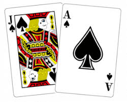
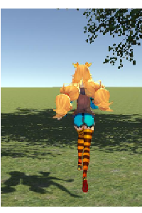

javascriptを使ってブラックジャックを作成しました。改良する時にはトランプの画像を使ってリアルなものにしたいです。
体験はこちらから


Unityを使って宝探しゲームやピンポンゲームを作成しています。Trainを使用して3Dのグラフィックを作れるようになりました。
現在は横スクロールゲームを作成中です。
部員管理のデータベースを作りました。xamppを使って動作が動くように変換しました。
phpと繋がっていないので実際に登録はできませんが動きの見本としておいておきます。
体験はこちらから
javascriptを使って動きがあるページを作成しました。マウスの動きを追尾していくものです。
光は配列とランダム関数を使って様々な色を演出しました。
体験はこちらから
上記の光の動きを元にして、自分でランダムで色の動きを作れるようにしました。
パラメーターを動かすと様々な動きを再現することができます。
体験はこちらから